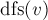

MAXimal
добавлено: 10 Jun 2008 19:24
редактировано: 23 Aug 2011 12:42
Содержание [скрыть]
Топологическая сортировка
Дан ориентированный граф с  вершинами и
вершинами и  рёбрами. Требуется перенумеровать его вершины таким образом, чтобы каждое рёбро вело из вершины с меньшим номером в вершину с большим.
рёбрами. Требуется перенумеровать его вершины таким образом, чтобы каждое рёбро вело из вершины с меньшим номером в вершину с большим.
Иными словами, требуется найти перестановку вершин (топологический порядок), соответствующую порядку, задаваемому всеми рёбрами графа.
Топологическая сортировка может быть не единственной (например, если граф — пустой; или если есть три такие вершины  ,
,  ,
,  , что из есть пути в и в , но ни из в , ни из в добраться нельзя).
, что из есть пути в и в , но ни из в , ни из в добраться нельзя).
Топологической сортировки может не существовать вовсе — если граф содержит циклы (поскольку при этом возникает противоречие: есть путь и из одной вершины в другую, и наоборот).
Распространённая задача на топологическую сортировку — следующая. Есть переменных, значения которых нам неизвестны. Известно лишь про некоторые пары переменных, что одна переменная меньше другой. Требуется проверить, не противоречивы ли эти неравенства, и если нет, выдать переменные в порядке их возрастания (если решений несколько — выдать любое). Легко заметить, что это в точности и есть задача о поиске топологической сортировки в графе из вершин.
Алгоритм
Для решения воспользуемся обходом в глубину.
Предположим, что граф ацикличен, т.е. решение существует. Что делает обход в глубину? При запуске из какой-то вершины  он пытается запуститься вдоль всех рёбер, исходящих из . Вдоль тех рёбер, концы которых уже были посещены ранее, он не проходит, а вдоль всех остальных — проходит и вызывает себя от их концов.
он пытается запуститься вдоль всех рёбер, исходящих из . Вдоль тех рёбер, концы которых уже были посещены ранее, он не проходит, а вдоль всех остальных — проходит и вызывает себя от их концов.
Таким образом, к моменту выхода из вызова  все вершины, достижимые из как непосредственно (по одному ребру), так и косвенно (по пути) — все такие вершины уже посещены обходом. Следовательно, если мы будем в момент выхода из добавлять нашу вершину в начало некоего списка, то в конце концов в этом списке получится топологическая сортировка.
Эти объяснения можно представить и в несколько ином свете, с помощью понятия "времени выхода" обхода в глубину. Время выхода для каждой вершины — это момент времени, в который закончил работать вызов обхода в глубину от неё (времена выхода можно занумеровать от  до ). Легко понять, что при обходе в глубину время выхода из какой-либо вершины всегда больше, чем время выхода из всех вершин, достижимых из неё (т.к. они были посещены либо до вызова , либо во время него). Таким образом, искомая топологическая сортировка — это сортировка в порядке убывания времён выхода.
до ). Легко понять, что при обходе в глубину время выхода из какой-либо вершины всегда больше, чем время выхода из всех вершин, достижимых из неё (т.к. они были посещены либо до вызова , либо во время него). Таким образом, искомая топологическая сортировка — это сортировка в порядке убывания времён выхода.
Реализация
Приведём реализацию, предполагающую, что граф ацикличен, т.е. искомая топологическая сортировка существует. При необходимости проверку графа на ацикличность легко вставить в обход в глубину, как описано в статье по обходу в глубину.
int n; // число вершин vector<int> g[MAXN]; // граф bool used[MAXN]; vector<int> ans; void dfs (int v) { used[v] = true; for (size_t i=0; i<g[v].size(); ++i) { int to = g[v][i]; if (!used[to]) dfs (to); } ans.push_back (v); } void topological_sort() { for (int i=0; i<n; ++i) used[i] = false; ans.clear(); for (int i=0; i<n; ++i) if (!used[i]) dfs (i); reverse (ans.begin(), ans.end()); }
Здесь константе  следует задать значение, равное максимально возможному числу вершин в графе.
следует задать значение, равное максимально возможному числу вершин в графе.
Основная функция решения — это topological_sort, она инициализирует пометки обхода в глубину, запускает его, и ответ в итоге получается в векторе  .
.
Задачи в online judges
Список задач, в которых требуется искать топологическую сортировку:
- UVA #10305 "Ordering Tasks" [сложность: низкая]
- UVA #124 "Following Orders" [сложность: низкая]
- UVA #200 "Rare Order" [сложность: низкая]